Dynamo Methods¶
This section will list all available methods that you are able to chain onto your Dynamo object that you create inside your Dynamo Controller. For a very simple admin, you might be able to get away with only using that auto() method which is auto-generated for you, and literally have no work to do. But in the case of a database relationship, or the case of renaming a field in the form, or sizing a picture a specific way, etc, you need to use the methods below.
addActionButton addField addFilter addFormFooterButton addFormHeaderButton addHandler addIndex addIndexButton auto checkbox clearIndexes file group hasMany hasManySimple hideAdd hideDelete indexOrderBy paginate password removeBoth removeField removeIndex searchable select setAddItemText setFormPanelTitle setIndexPanelTitle setPreviewLink setSaveItemText text textarea
Note
NOTE: In the examples below, click the pictures to get a description and better view of them!
Options that can be passed into any dynamo field
Before going over the methods, it's important to understand that there is "field partials" for each type of field in Dynamo. There is text, select, hasMany,
group, file, checkbox, password, and textarea partials of code that get used when you call a function on the DynamoController. These partials of code look to see if
you passed in any extra options to be applied. For example, you can pass in a "tooltip" option to any field to render a tooltip next to the input's label.
Here I use the select function which renders the select.blade.php partial of code in the dynamo package. I pass in some additional options that I want applied to that partial
code. The first is "attributes". For this option, set its value to an array of HTML attributes that you want applied to your input field, like disabled is true. This makes
it where the input field can't be edited by the user. The next option is "options", which is how you pass in the different possible things that can be selected. In this case,
I use an Eloquent model called "Testing" and call that functions getStatusus() function which returns an array of key-value pairs. this array says 10 = Draft and 30 = Published.
So if they select to save the post as a Draft, it will save the number 10 in the status field in the database. Next we have label which just changes the text of the input's label.
By default this label will be the name of the database field passed in; in this case, that is status. Next we have tooltip, then we have position. By default Dynamo will position
the order of the input fields on the form in the order you write them, but when using the auto function sometimes things get out of position, so you can manually set the order.
{kind=link}
addActionButton()
The addField method allows you to create a button along-side the other default action buttons, Edit and Delete. Keep in mind these default buttons can be
remove by calling hideDelete()
{kind=link}
{kind=link}
addField()
The addField method is a bit tricky. You will never actually call this method directly. However, the Dynamo has a PHP magic method __call
that calls addField. In the case where you use methods such as text(), file(), checkbox(), hasMany(), password(), select(), textarea(), you are actually
just calling __call() in reality, which calls addField(). Now, you are free to create your own methods similar to the ones I just listed. You have to created
them in the vendor->jzpeepz->dynamo->src->resources->views->partials->fields directory.
{kind=link}
addFilter()
The addFilter method is a brand new function in Dynamo that lets you filter the index view of an admin by whatever you want. We needed to implement
this feature for our House of Representatives project because our client wanted to be able to "Filter" the Representatives by Terms. Terms and Representatives have
a many-to-many relationship with each other in our database. See how we used addFilter below.
{kind=link}
{kind=link}
{kind=link}
addFormFooterButton()
The addFormFooterButton method let's you add a custom button on the footer section of the dynamo form. You can call this function as many times as you want
and buttons will keep rendering next to the delete button. One unique thing you can do in the bootstrap 4 version of Dynamo is call ->hideDelete() followed by calling
->addFormFooterButton() to "override" the delete button with a data-toggle="modal" data-target="#relationships-manager-modal" included in the markup. Check out the screenshots below
![addFormFooterButton() a second time to get that "LOL" button that you, and it links to whatever page I want it to within my website/application." data-title="Here I've called many different functions on this dynamo form, but we only interested in the bottom right-hand corner. I've called ->hideDelete() and ->addFormFooterButton() to "overwrite" the delete button with my own delete button that does something extra you'll see in the next screenshot. I also called ->addFormFooterButton() a second time to get that "LOL" button that you, and it links to whatever page I want it to within my website/application." >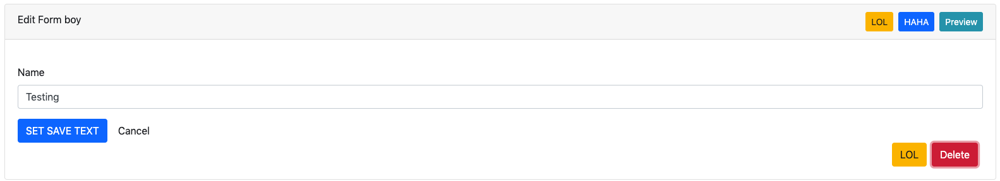](_images/addFormFooterButton1.png){kind=link}
{kind=link}
{kind=link}
addFormHeaderButton()
The addFormHeaderButton method let's you add a custom button on the header section of the dynamo form. Foreach time you call this function,
a new button will appear on the header in the order you called the functions. By default, Dynamo creates a "Preview" button that is rendered if you are editing
an item. The preview button's link will call the url() function that you created on your Dynamo model. So if you created a Dynamo object called "FAQ", you would
want to implement a function on that model called url(). Check out the screenshots below
{kind=link}
{kind=link}
addHandler()
The addHandler method is called by default in your DynamoController and will auto-populate the form
with text boxes for each field in the database for that object.
{kind=link}
{kind=link}
addIndex()
The addIndex method allows you to add a new column to the index view of your module. This method takes up to
three parameters, but only passing one is necessary. The first parameter is the name of the field in your database. The second
is the how you want the name to appear in the index view. The third is a closure function to do something specific. Notice
in the examples below of cases where addIndex is used with one, two, and three parameters and their outputs on the index view.
{kind=link}
{kind=link}
{kind=link}
{kind=link}
addIndexButton()
The addIndexButton method allows you to add a button along side the Add button in your Dynamo Manager. One example of where you would want to use addIndexButton
would be if you wanted to minimize the amount of modules in your navigation. Below is an example:
{kind=link}
{kind=link}
{kind=link}
auto()
The auto method is called by default in your DynamoController and will auto-populate the form
with text boxes for each field in the database for that object, and will automatically set the index view with those same fields.
{kind=link}
checkbox()
The checkbox method lets you add a checkbox to your form. It is particularly useful if you have a boolean attribute for an object in your database.
For example, we used checkboxes on our House of Representatives website to allow the user to "Activate" Faq's and Alerts, as seen in the screenshots below.
{kind=link}
{kind=link}
{kind=link}
clearIndexes()
The clearIndexes method will remove all the columns that are generated from the auto() function that is at
the top of the DynamoController by default. After calling clearIndexes, you will certainly want to call addIndex right after.
Notice the examples below.
{kind=link}
{kind=link}
{kind=link}
{kind=link}
file()
The file method will allow the user to select a file from their computer when filling out the form for this field. Let's say you have a Staff module
and you want the user to be able create Staff "objects" with their name, and photo. Check out the example below.
{kind=link}
{kind=link}
{kind=link}
group()
The group method is called by default in your DynamoController and will auto-populate the form
with text boxes for each field in the database for that object.
Auto function being called on the newly created Dynamo object.
hasMany()
The hasMany method is called by default in your DynamoController and will auto-populate the form
with text boxes for each field in the database for that object, and will automatically set the index view with those same fields.
hasManySimple()
The hasManySimple method is used when you want the user to be able to "multi-select" another object that is related to this object. For example, a
common database relationship on websites might be: "FAQs have many FAQ Categories, and FAQ Categories have many FAQs". If you have made this relationship in your
database using foreign keys and such, then you can use this method. First go to the model of FAQ and add a public function that says FAQs belongToMany FAQ Categories,
and go to the model of the FAQ Category and do the same. Next, you will be able to chain on the hasManySimple() function on the FAQ DynamoController! Check out the
example below.
{kind=link}
 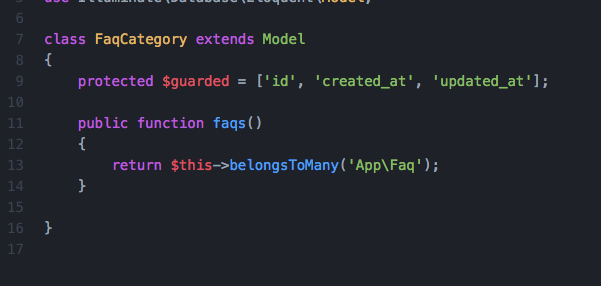
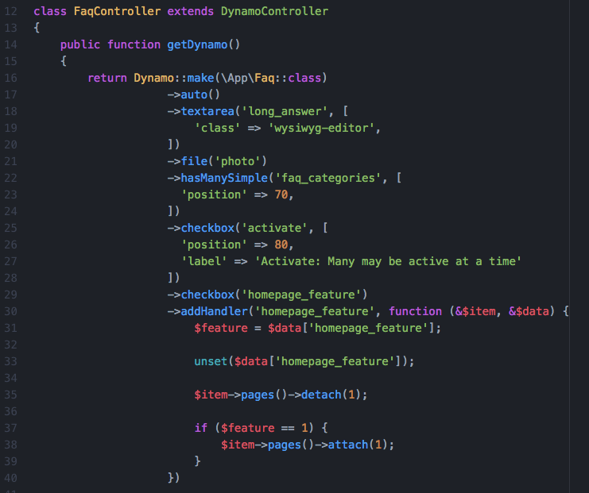
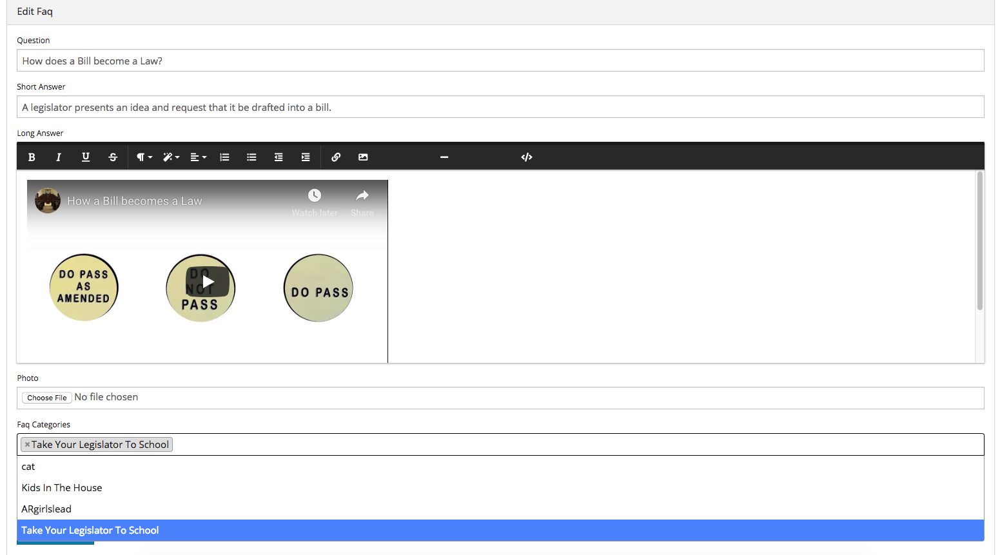
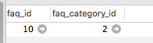
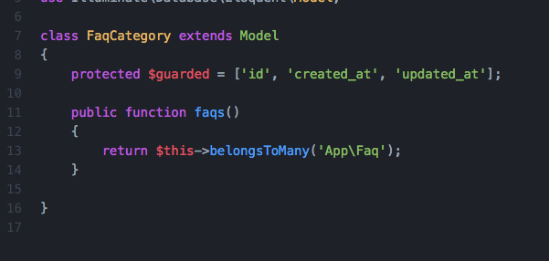
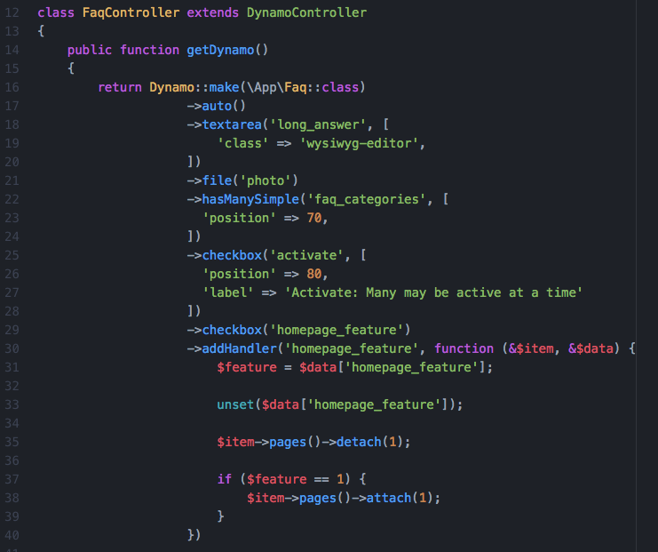
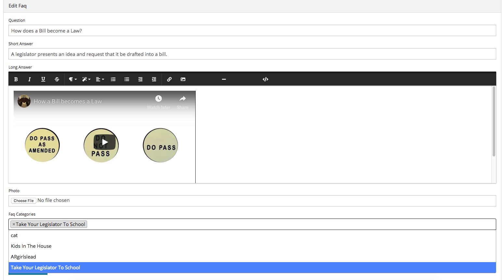
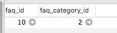
{kind=link}
{kind=link}
{kind=link}
{kind=link}
hideAdd()
The hideAdd method simply hides the Add button, so the user isn't able to add new objects/items into the database. You would use this
if you wanted them to be able to view, edit, and delete the items, but not add new items. You could also use the hideDelete() method in combination with this method.
{kind=link}
 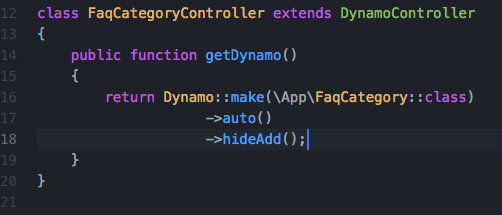
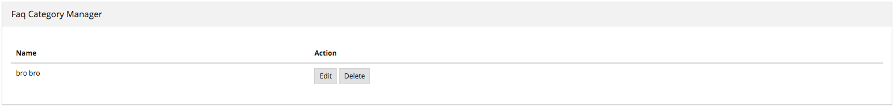
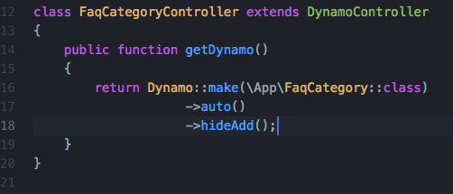
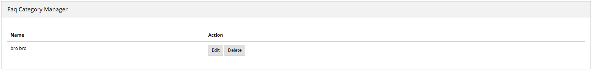
{kind=link}
{kind=link}
hideDelete()
The hideDelete method simply hides the delete button on the index view, so the user will not be able to delete the
object/item from the database.
{kind=link}
{kind=link}
{kind=link}
{kind=link}
indexOrderBy()
The indexOrderBy method is how you order all the objects in the index view. Commonly, you might order by last name or by date created.
By default, it orders in ascending order, you can pass a second parameter of 'desc' if you'd like to reverse it.
{kind=link}
{kind=link}
paginate()
The paginate method
Auto function being called on the newly created Dynamo object.
password()
The password method will remove all the columns that are generated from the auto() function that is at
the top of the DynamoController by default. After calling clearIndexes, you will certainly want to call addIndex right after.
Notice the examples below.
removeBoth()
The removeBoth method removes the field from the index AND the form. It is basically removeField() and removeIndex() both in one function.
please read those two functions directly below this one.
removeField()
The removeField method removes any field that you pass it from the index view. This method is needed when the auto() function
adds a field you don't want the user to see. A common case of using removeField would be like in the indexOrderBy example, where we order staff members
by position. But we don't actually want the user to be able to set the position manually within the form. So we removeField('position'). They update the
position by drag-and-drag in that case. Check it out below
removeIndex()
The removeIndex method is exactly the same as removeField right above this. The only difference is you are removing an a column from the index
view that was automatically added by the auto() function. Usually, we don't see this function since we use clearIndexes() and addIndex() to start from scratch anyways.
But in the case that auto() is doing everything you need it to do minus one pesky index you don't want to see in the index view, removeIndex is less code to type than
starting from scratch.
searchable()
The searchable method allows you to define with parts of the model are searchable. The parameter you
pass into this function must be the name of the field in the database that you want to be searchable in the search
bar. For example, if you have an admin called Representatives, and you want to have a search bar where the user can search
for staff members by their first and last name you might chain on the searchable method twice:
{kind=link}
{kind=link}
{kind=link}
{kind=link}
select()
The select method will allow the user to use a select box and select a single item. When you use the select method, your second parameter
will be an array all the options they have to select from.
{kind=link}
{kind=link}
{kind=link}
setAddItemText()
The setAddItemText method will allow the user to override the text on the Add button for models. The default text says "Add $dynamo->name" or "Add Faq"
The reason we created this method is because normally you want to use camelcase(thisIsCamelCase) when naming your Dynamo models and variable names. But you might not want
the text of the add button to read "Add Faq". You might instead want it to read "Add FAQ". Therefore, the ->setAddItemText function was born.
{kind=link}
{kind=link}
setFormPanelTitle()
The setFormPanelTitle method will allow the user to override the text on the dynamo Form panel.

{kind=link}
setIndexPanelTitle()
The setIndexPanelTitle method will allow the user to override the text on the dynamo Index panel.
{kind=link}
{kind=link}
setPreviewLink()
The setPreviewLink method will allow the user to override the url() link on the "Preview" button on the dynamo Form. By default
the "Preview" button will look for a function on the dynamo model called "url()". If that function, exist, the button will render. But sometimes,
you may want to override that link and use your own link. If so, use the ->setPreviewLink() function
{kind=link}
{kind=link}
{kind=link}
setSaveItemText()
The setSaveItemText method will allow the user to override the text on the blue Save button at the bottom of the dynamo Form.
{kind=link}
{kind=link}
text()
The text method is probably the simplest Dynamo method. It makes a textbox on the form for the given database field. Now, you can of course pass
in other parameters as you can with all Dynamo methods, such as position (to make the field appear in a different order than default), tooltip(allows you to
render a ? mark tooltip explaining perhaps the format that is expected in the field), class(where you can assign the input field to have additional class names),
label(allows you to change the label text of the input field, be default it will be whatever the name of the field is in the database), and you can also do
closure functions with the "current item" as the argument for the third parameter of the text field. Check out some of the examples below.
{kind=link}
{kind=link}
{kind=link}
{kind=link}
{kind=link}
{kind=link}
{kind=link}
textarea()
The textarea method is just like the text() method, except it's a bigger text box on the form. In many of our websites, we pass in a class
called "wysiwyg editor" which stands for "What You See Is What You Get". This will only work if you have the |froala| text-editor installed in your laravel project.
{kind=link}
{kind=link}